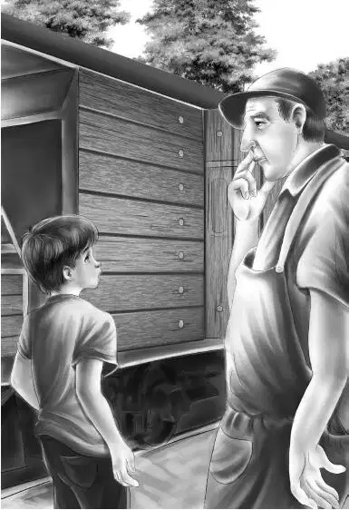

Very soon the train slowed down at Pinedale and stopped. Six men were standing on the platform. Some of them were laughing and pointing as the Aldens got off the caboose.
Benny went up to a tall man and said， “We’d like to know what is different about our caboose. Why are the men pointing at it？”
“That’s easy， sonny，” said the man， laughing. “That caboose is the famous old Number 777. It used to be white with gold numbers. It’s a circus caboose！”
The Aldens stared at the man. A circus caboose！So this might have something to do with history and mystery！
The tall man smiled. “You’re surprised， aren’t you？I can tell you a lot more about your caboose. My name is Shaw. I’m the stationmaster.”
“I’m glad to meet you，” said Grandfather. “My name is Alden. My grandchildren are very much interested in anything you may say about our caboose.”
Just then the Aldens noticed that one of the station workmen had walked over to the big caboose. He was standing there looking at it with his head on one side. He had his hands on his hips. He wore a funny， small hat and big shoes turned up at the toes. But there was something sad about his face.
Mr. Shaw called to the workman and said， “How about it？What do you think of Number 777 in its new red dress？”
The workman drawled， “It couldn’t fool us！We’d know that caboose if we saw it in China！”
Everyone began to laugh. Nobody could help laughing. There was something about this man that was very funny. And this was strange， too， because the man looked sad.
Suddenly the workman said to Henry， “I’ll get you the ice and water that you need.”
The man turned and left quickly.
Henry started to say no， but Mr. Shaw said out of the side of his mouth， “Let him do it. I’ll tell you why later.”
When the workman was out of sight， Mr. Shaw said， “It will do that man good to help you. He hardly ever says a word. I was surprised when he offered to help you.”
Benny said， “Mr. Shaw， it’s funny about that man. He looks so sad， and yet he makes me laugh just to look at him. He ought to be a clown.”
“He was a clown，” said Mr. Shaw. “How did you ever guess？He was called Cho-Cho， and he traveled with a circus. He used to live in Pinedale before he joined the circus. That’s why we all know caboose Number 777. Cho-Cho was always on the circus train.”
“Was that a long time ago？” asked Henry.
“Yes， quite a few years ago. That circus train came this way every summer. It used the tracks of the Little North Railroad. We trainmen got to know a lot of these circus people. We saw them every year. Some of us even went to see the show in the nearest big town.”
“Why is Cho-Cho so sad now？” asked Benny.
“That’s quite a story，” said Mr. Shaw. “His wife was Chi-Chi， the high-wire artist. Her whole family was famous. Her mother was so wonderful that some king or other in Europe gave her a beautiful diamond necklace. When her mother grew old， she gave the necklace to Chi-Chi. I remember when it came. Chi-Chi showed it to everyone right on this very platform. She loved to show it because it was so beautiful. But she never wore it when she was doing tricks. She wore a cheap copy that sparkled. Then one night she fell. She slipped on the wire and was instantly killed.”
“How awful！” said Jessie and Violet.
“Yes， it was a terrible thing. It was awful for Cho-Cho. He left the circus and came to live in Pinedale again. He soon ran out of money， so he agreed to work for me around the station. He had to sell his talking horse， too.”
“Talking horse？” asked Benny.
Another man spoke up. “Yes， sir！That was a beautiful horse—a special color. Never saw a horse like him. He had four white feet and a white star on his forehead. His coat was golden brown.”
“That’s right，” said Mr. Shaw. “His tail was cream color and wavy， and it was so long it almost touched the ground.”
“He sounds wonderful，” said Violet. “How did he talk？”
“Cho-Cho asked him questions. He tossed his head for yes and shook it for no. Then he would paw with his foot to answer number questions. If Cho-Cho asked him how many were two and one， the horse pawed three times. At the end of the act， Cho-Cho always said， ‘What do you want to do now， Major？’ and the horse would lie down and shut his eyes.”
“What a pity he had to sell that horse，” said Grandfather. “Do you know who bought him？”
“Oh， yes. A man named John Cutler bought him to amuse his children. The Cutlers live in Glass Factory Junction. That is the next station. They live about a mile from the station through the woods.”
“Oh， I’d love to see that horse，” said Benny.
“Well， you can. If you can walk a mile and back.”
Mr. Alden said， “If Cho-Cho owned the diamond necklace， I don’t see why he didn’t sell it. Maybe he could have kept the horse.”
“Oh， the necklace was lost，” said Mr. Shaw. “Chi-Chi always hid it when she wasn’t wearing it. She would never tell anyone where it was， not even Cho-Cho.”
Benny shouted， “Maybe she hid it in our caboose！”
“No， not likely，” said Mr. Shaw. “The police looked through every car in that circus train， but they never found it. Anyway， Chi-Chi never lived in that caboose.”
Another man said， “She spent a lot of time there， though.”
“Yes， she did，” agreed Mr. Shaw. “The owner’s wife lived in Number 777， and she made a great friend of Chi-Chi. They fixed up that caboose with lace curtains and everything. Look！Here comes Cho-Cho. See if you can get him to tell you the rest. It will do him good to talk.”
The Aldens watched Cho-Cho as he came back with two pails of water and ice on a truck.
Before anyone could stop Benny， he ran up to the old clown.
“Mr. Cho-Cho，” Benny said， “Mr. Shaw has been telling us about you. He told us about your wife’s diamond necklace. Do you think someone could have stolen it？”

For a minute Cho-Cho did not say anything. It looked as if he were going to turn and run away. Then he said in almost a whisper， “Yes， boy， I think the Thin Man stole it.”
“And who was the Thin Man？” asked Henry.
“He was my friend. He had a sideshow in the circus with me.”
“What makes you think he stole the diamonds？” asked Henry.
“Well， one day Chi-Chi was showing the diamonds to everybody. I saw her give them to the Thin Man， but I never saw him give them back. He said he did， but Chi-Chi was dead then， and nobody else saw anything at all. At first I believed my friend.”
“Did you get the police？” asked Benny.
“Oh， yes. We had a terrible time！Everybody was upset. The police believed that the Thin Man stole the necklace. And at last I believed it myself.”
“Why？” asked Benny.
“The next day the Thin Man disappeared.”
Mr. Alden nodded. “That does look bad for poor Mr. Thin Man.”
Jessie said， “I should think it would be easy for the police to find him if he were really very thin.”
“Oh， he was thin， all right！You could see his bones. He had a long black beard down to his waist.”
“Of course he could cut that off，” said Henry.
“Yes， that is the first thing he would do. The police had men on the lookout for miles and miles. But nobody ever found a single sign of the Thin Man.”
Mr. Shaw said， “Let me tell them about the Thin Man’s best friend. He lives at Beaver Lake. He was so angry at everybody that he can’t bear to hear anything about Number 777， even to this day. He’s an odd fellow and is taking care of some wild beavers at Beaver Lake.”
“Oh， oh！We know him，” shouted Benny. “And he was really angry when he heard we came from Number 777.”
Mr. Shaw nodded. “He would be. The people in that caboose made his best friend run away. Old Beaver never believed that the Thin Man stole the diamonds.”
“Here’s another thing，” said Henry. “Do you know anything about a big postman named Sid Weston who came to this train with a letter for Mr. Carr？”
“No， I never heard of him. Why？”
“Well， he wanted to look around in our big caboose， but Mr. Carr said there wasn’t time. Why do you suppose he wanted to do that？”
Cho-Cho threw his hands up in the air. “Maybe he is interested in trains. Lots of people come to take pictures of the cars on this old railroad.”
Benny said， “I want to see your horse， Cho-Cho， if he is at Glass Factory Junction.”
“I’m sorry， Benny. We can’t take time，” said Grandfather. “We want to see the glass.”
Benny said， “But I’d rather see the talking horse.”
Jessie said， “Oh， Benny， glassmaking is so interesting. You never saw anyone blow glass， did you？”
“No，” said Benny， “and I never saw a talking horse either.”
Mr. Shaw laughed. “You girls will like the glass. There are pieces of broken glass all over the place. You can pick them up and have them polished.”
“What colors are they？” asked Violet.
“Every color， and some are mixed colors. You can find red and white ones， black and white， and all shades of blue and green. The pieces make beautiful pins and bracelets.”
Henry and the clown put the ice and water in the two cabooses. As Mr. Alden started to get on the train， Mr. Shaw whispered， “I’m certainly amazed. I never heard Cho-Cho talk so much in my whole life. He never says a word if he can help it.”
“This time he couldn’t help it，” said Benny， laughing.